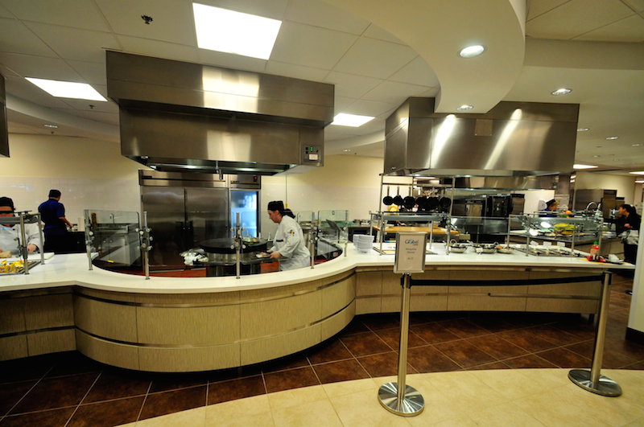

MunchiesSNHU
Food Waste Tracker
About one-third of all food produced globally is wasted. At SNHU, we're tackling our share — one pound at a time — through measurement, composting, and community-driven action.
When food ends up in a landfill instead of a compost bin, it decomposes without oxygen and produces methane — a greenhouse gas 25 times more potent than CO₂. On a campus that feeds thousands of students daily, that adds up fast.
Food systems — including waste — account for roughly 8–10% of global greenhouse gas emissions, making it one of the most impactful areas to target.
Every pound of food wasted also wastes the water, land, energy, and labor that went into producing it — often for decades before it reaches a plate.
Composting diverts food from landfills, eliminates methane production, and creates nutrient-rich soil — turning waste into a resource instead of a liability.

Small changes in how campus food is handled create measurable reductions in carbon emissions and waste.
Composting just one pound of food prevents roughly 0.25 lbs of CO₂-equivalent emissions that would have been released in a landfill.
The emissions avoided by composting a single pound of food are equivalent to taking your car off the road for roughly a mile.
Composting 192 lbs — about a semester's worth — offsets what a single tree absorbs in a full year of growing.
Compost adds organic matter back to soil, improving structure, water retention, and plant nutrition — closing the loop naturally.
Composting food waste uses significantly less energy than landfilling or incineration, and produces a useful end product rather than emissions.
When students are informed about waste levels and composting rates, participation increases. Visibility creates behavior change.
SNHU's sustainability initiative targets a 50% food waste diversion rate — meaning at least half of all campus food waste is composted rather than landfilled. MunchiesSNHU tracks this goal live.
The diversion rate is calculated live from logged campus data: lbs composted ÷ total lbs logged × 100. Staff track this daily; students can see it on their dashboard.
Every waste entry captures a full picture of campus conditions — not just how much was discarded, but how it's decomposing.
Small operational changes at the dining hall level create the biggest measurable reductions in waste.
Track which stations generate the most plate waste and adjust standard portion sizes accordingly. Smaller starting portions reduce throw-away without reducing satisfaction.
Use bin fullness data from MunchiesSNHU to schedule compost pickups proactively — not on a fixed calendar — to prevent overflow and contamination.
Check the week-over-week waste data before placing supply orders. High-waste food types from last week should trigger smaller orders this week.
When students can see how their dining location ranks on the campus leaderboard, it drives engagement. Post the rankings visibly in dining halls.
Contamination is the #1 reason compost gets rejected. Clear, visual labels at every bin — including examples of what goes in — dramatically improve compost quality.
Waste spikes at the beginning and end of semesters. Targeted awareness campaigns during move-in and finals week can capture the highest-impact windows.
MunchiesSNHU gives SNHU the real-time measurement layer that turns sustainability intentions into trackable outcomes. Staff log data; the platform makes sense of it for everyone.
The 50% goal is tracked automatically — no manual calculation needed.
Ask plain-English questions about the data and get grounded, actionable answers.
Upload a week of data in seconds — with row validation before anything is saved.
Turn campus sustainability into a visible, community effort students can rally around.
Create an account to join the campus effort — staff dashboards for data collection, student dashboards for impact visibility.